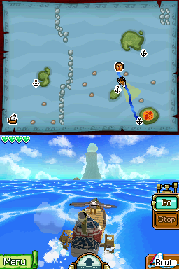
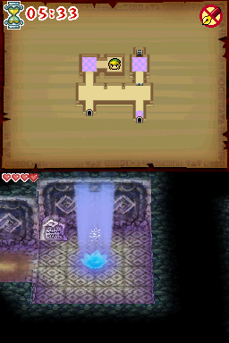
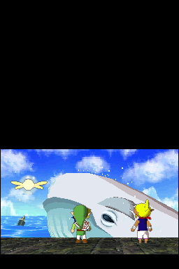
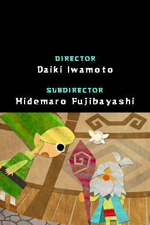
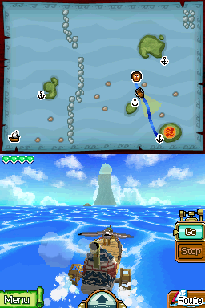
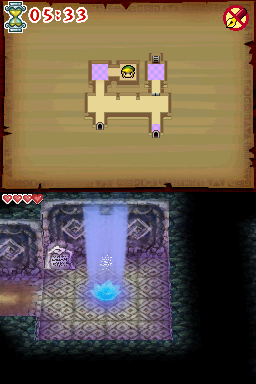
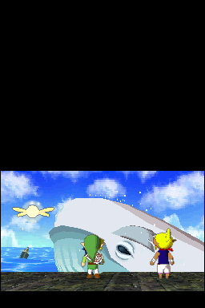
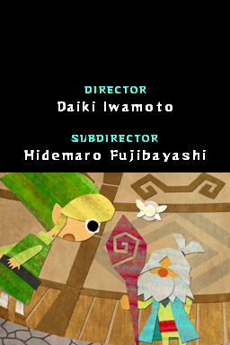

The Legend of Zelda: Phantom Hourglass

Complete on 2022-06-07
4 / 5
Release Date: Oct 1, 2007
Meta Score: 90
Screenshots
 







Notes
Phantom Hourglass is a Zelda game, really well made in general but it has a few issues.
There's a bit of an overemphasis on using the DS's (at the time) new and unique hardware features. Touch-based controls and drawing on the map are fine, but the use of microphone and closing the DS lid(!) is kind of gratuitous.
Dungeon design is not at its best. It always feels like you're a bit on-rails and can just go with the flow, complete each room, and get through the dungeon without really engaging the brain. There's no real killer dungeon with a large scale puzzle to solve.
Then there's the Temple of the Ocean King. Repeated trips retreading the same ground and bad stealth mechanics make the Temple feel like a real roadbump when you're otherwise having a good time with the game. And that's not to mention the Ghost Ship combining "stealth" with escorting slow-walking NPCs.
All that complaining knocks Phantom Hourglass down to a 4/5.